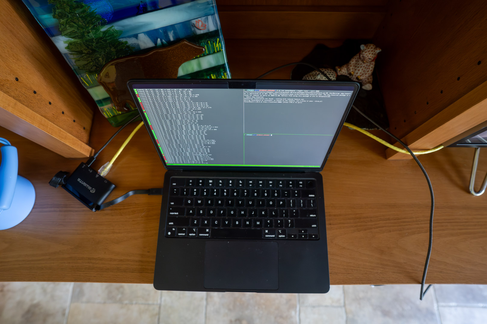

Peralta üåêü§ñüõúDistributed RLVF Over Wifi¬∂
This project is the simplest possible implementation of distributed RL with verifiable reward (RLVF) that I am capable of writing. What is written here is part design document, part personal manifesto, and part pet project.
This blog post demonstrates distributed training environments where:
- The trainer–generator data link is constrained by traversing a Wi-Fi 6E link
- The trainer–generator data link is constrained by traversing the open internet (over VPN)
Without giving too much away, my primary conclusion from this exercise is that larger-scale distributed RL training runs are not only possible, but much closer in reach than I had initially suspected.
You might ask: Why do this? What's the point?
I've wanted to do this for a long time. Not this exact thing—RLVF hasn't been around that long—but I've long wanted to take a system I've implemented or seen implemented in large tech companies and boil it down to the most fundamental parts. How compact can we make a system that's usually 10k lines of code in a big tech org? What's the smallest amount of compute required to implement a working distributed RL system? In this case it only took ~500 lines of code, a good network, $500 in small form factor computers, and a MacBook.
Granted, this is missing many necessary features, but the fundamentals are there. This can be scaled out bit by bit. If you did scale it out, you'd no doubt end up replacing nearly every line of code in this program, but that's not the point. The point is to get the correct starting place from which you can develop something more general and scalable.
I have an opportunity to work on this project because I arranged five weeks after leaving Meta. I rejoin Google DeepMind in October, and until then, I am free to play with whatever technologies and techniques I want to learn about.
Objective¶
The goal is to learn a simple task in the following setup:
- Small model for fast iteration
- Modest hardware to make this approachable and inexpensive
- Distributed heterogeneous compute (CUDA, CPU, MPS)
- Minimal code, zero configuration, and minimal generalization for maximum simplicity
Constraints¶
All models trained are ≤1B parameters (Gemma/Qwen). These models learn to translate a natural language math problem into a Python-esque syntax that the system can execute (a very simple calculator tool).
Hardware Constraints¶
My setup uses three primary machines and a few peripheral ones. Anything I was incapable of doing with these machines, I considered out of scope.
- üíª An M2 MacBook Air, by far the most expensive and capable machine (primary)
- üü© An 8GB Jetson Orin Nano Super, the only CUDA-enabled machine (primary)
- üñ•Ô∏è An old ThinkStation small form factor PC (primary)
- üåê Unifi Network Gateway and Switch (networking equipment, peripheral)
- ⛁ Network Attached Storage machine for checkpointing and other necessities (peripheral)
Opinions on Software Design¶
I decided early on not to generalize any part of the program. The goal isn't reusable abstractions, but instead learning useful concepts I can apply to more complex tasks later. Generalizing before you fully understand something is a fundamental mistake—and probably the most common mistake among engineers rewarded for impact. You almost always over-generalize or generalize the wrong parts, adding unneeded complexity future engineers must wade through.
The sad reality is most RL training systems are over-engineered inheritance hell on steroids, built in a race for glory, funding, or promotion. To be clear, I'm not faulting engineers—they're following the industry's incentive structure. Also, most software starts off simple and grows more complex over time as feature creep and reprioritization take hold.
During my five weeks working alone, I could sidestep all of this. I could explore solutions without distorted incentives nudging my decision-making.
This keep-it-simple approach led me to an ironic insight: software complexity is very difficult to measure empirically, and I suspect for this reason our language models, trained with RLVF, aren't predisposed to creating the simplest solution—just a valid one. Like any good engineer, I've been making copious use of LLMs for programming. What I found was that keeping programs simple was actually harder when using coding models. Delegating to them often produced solutions more complex than needed, or suboptimal in hindsight once additional functionality was required. I did get plenty of value from LLMs, but in certain cases where critical design decisions were involved, delegation led to worse outcomes.
This reasoning led me to three rules I followed like gospel.
1Ô∏è‚É£üìÑ Design Rule One: One File¬∂
All code must live in a single file. This makes iterating much faster. I can find, edit, delete, and refactor code more easily. I use Cursor often, but when I need to use other chatbots, having everything in a single file makes copy–paste trivial.
üö´‚öôÔ∏è Design Rule Two: Zero Configuration¬∂
The programs I wrote take no CLI flags, read no external configuration files, and require no setup. Any hyperparameters are defined as global constants at the top of the file. Need to change the batch size? Change one line.
This prevents indirection from creeping in. You never have to ask yourself “should this be configured or hard coded?” It's always hard coded. Need to change the loss function? In a config-driven system, you'd define it, add a flag, and wire it up. In a zero-config system, it's just a code edit—no extra complexity.
üö´üß© Design Rule Three: No Generics¬∂
No Generic[T], no abstract over-generalization. Some functions may look
generic, but as soon as something needs changing, they break. This is intentional: I
care about learning, not generality.
Standing on the Shoulders of Giants¶
One design preference I have is to avoid reinventing the wheel. I have limited time and I don't want to spend it debugging why an RPC is failing. This means using tooling such as Ray Core to handle inter-machine communication, the Transformers library for generation and training, and PyTorch for everything in between.
I considered making this a rule, but breaking it isn't an option, it's closer to a law. Without these technologies, this project would have been impossible. Thank you to the maintainers of these amazing systems. More on this later.
The Solution¶
Producer–Consumer¶
I model the sampling-to-training data flow as a producer–consumer problem. There
is a single class called Batcher that handles most of this logic. The batcher
reads data, creates generations, and enqueues those generations for
the trainer.
class Batcher:
def __init__(self, generators: Sequence[ActorHandle[Generator]], ...) -> None:
...
def produce(self) -> None:
"""Starts producer threads that dispatch generation RPCs and enqueue the results as batches."""
def consume(self) -> Iterator[TensorDict]:
"""Yields training batches.
Batches are yielded until the queue is empty, at which point the iterator blocks until there is
another batch to yield.
"""
def load_checkpoint(self) -> None:
"""Calls generator.load_checkpoint() for each generator.
Each generator looks in the checkpoint directory for the newest checkpoint and loads it.
"""
The produce function starts worker threads that send RPCs with prompts to the
generator. Once generations are returned, the function enqueues them.
If the queue reaches its maximum size, it applies backpressure by blocking
producer threads from enqueueing additional generations.
Generators and Trainers¶
Generation and training are implemented by two Ray Actor classes: Generator and
Trainer.
@ray.remote
class Generator:
def generate(self, prompt: Sequence[int]) -> Sequence[int]:
...
def load_checkpoint(self) -> None:
"""Loads the newest checkpoint file from disk."""
@ray.remote
class Trainer:
def step(self, batch: TensorDict) -> None:
"""Performs a forward pass, backward pass, and optimizer step for a given batch."""
def checkpoint(self) -> None:
"""Writes the weights to a checkpoint file."""
The train Function¶
The train function implements the training loop and ties together the classes
defined above. Here is a simplified version:
def train(trainer: ActorProxy[Trainer], batcher: Batcher) -> None:
for batch in batcher.consume():
# Step the trainer and record metrics.
train_metrics = ray.get(trainer.step.remote(batch))
record_metrics(train_metrics)
# Checkpoint the model from the trainer, load the new checkpoint in generators.
ray.get(trainer.checkpoint.remote(step))
batcher.load_checkpoint()
Hardware and Physical Topology¶
I tried various topologies, including running the entire algorithm on a single host—the M2 Air—which worked but was terribly slow and would intermittently lock up my machine.
Soon after, I added a second host, the SFF ThinkStation (a CPU machine), and used it as the only generator. This worked very well: it improved step time significantly and allowed me to do other work on my laptop as training progressed.
Eventually, I added the Jetson device as a second sampler. This was definitely
unnecessary, as it resulted in underutilization of the samplers. Still, it was
fun to get this setup working consistently. There are a few quirks, like
getting the correct torch installed on the right machines. I used architecture
selectors in pyproject.toml purely for convenience, though this approach is
not ideal and shouldn't generally be recommended. I only wanted one
pyproject.toml that worked on all machines, and I needed a way to single out
the Jetson to install a CUDA-specific torch build.
You'll notice the trainers and generators are treated as "pets"—each machine is selected in a hard-coded manner. Again, simplicity over generality. Because I'm using heterogeneous compute and didn't want to develop generic hardware selection logic, I just pinned Ray actors to specific machines.
These three machines are networked over my LAN in the following topology:
This diagram shows the physical network layout. The hostnames in the diagram are only configured on my LAN.
I said the goal of this project was to keep it simple—I mostly meant the code, not the hardware. Here's a look at my admittedly over-engineered network rack:
From top to bottom: Network attached storage (UNAS Pro), camera and access point patch panel, PoE switch (USW Pro Max 24), device and accessory patch panel, Unifi gateway (UDM Pro Max), Lenovo ThinkCentre SFF PC (left), and Jetson Orin Nano Super (right).
This obviously looks expensive, but the reality is, if you can figure out network storage and have a decent everyday machine, the remaining compute can be purchased for around $500. The Jetson Orin Nano Super retails for $249 (before shipping or tax), and a cheap 10-year-old ThinkCentre PC is probably around $200. I had this one in a box full of USB cables from a decade-old project that never came to be.
You don't need all this fancy network and compute infrastructure to do something similar. However, it does help by providing functionality such as local DNS, simple VPN setup, solid networking, reliable storage, and so on. It's also fun to set up and learn about this equipment.
I also performed a training run while I was in Tahoe with the M2 Air as the trainer. In this setup, the laptop was VPN'd into my home network, using both rack machines as generators. As you can imagine, this was much, much slower than the colocated setup since the trainer had to send updated checkpoints to the generators over the open internet.

The M2 Air executing a training run from Tahoe, with the samplers in Oakland. After each step, the weights must traverse the open internet so the generators can get an update.
Data¶
There are three datasets used in this project, all with the same schema.
$ head -n 5 data/math_1k.csv
python_expression,natural_language
(12 + 3 + 37) * 14 - 15,"add 12, 3, and 37, multiply that sum by 14, then subtract 15."
(20 * 12 * 4) + 26,"multiply 20, 12, and 4 together, then add 26."
(8 + 13) + (42 * 38) - 9,"add 8 and 13, multiply 42 by 38, add the results, then subtract 9."
7 * (25 + 8 + 9) - 13,"add 25, 8, and 9, multiply that by 7, then subtract 13."
The datasets have two columns: python_expression and natural_language. The python_expression column
contains an executable math expression, and natural_language contains the unstructured natural language
translation of that expression.
As mentioned before, the model's job is to convert the natural language into an expression that can be
evaluated to the correct answer. The python_expression column is used to compute the ground truth.
The three datasets are:
| Dataset Name | Description |
|---|---|
math_250.csv |
The smallest dataset containing 250 examples for evaluation |
math_1k.csv |
A small training dataset with 1k examples, can be memorized over the course of these runs |
math_10k.csv |
A 10k-example training set created by “expanding” examples from math_1k.csv by appending additional operations |
This data is mostly generated by other language models and may contain some errors.
Reward¶
Reward is computed by the following function:
def reward_fn(target: str, generation: str) -> float:
target_val = eval_math(target)
generated_val = eval_math(generated_text)
return 1.0 if target_val == generated_val else 0.0
The eval_math function is equivalent to Python's eval, but only for
operations such as +, -, *, /, ....
Loss¶
I didn't spend much time trying different loss functions or tuning the ones I did implement. I started with the simplest possible option: REINFORCE policy gradient. From there I implemented GRPO, but found it difficult to beat REINFORCE on this simple task.
None of these loss functions use a KL penalty. My intuition is that the KL term serves no purpose here, since the objective is to overfit to an extremely narrow task. There's no reason to retain natural language generation capabilities.
REINFORCE¶
The math_reinforce.py experiment uses a vanilla REINFORCE policy gradient,
where advantage is computed over \(K\) generations per prompt as:
The loss is the negative reward-weighted token log-likelihood over the generated tokens only:
There is no KL penalty, no clipping, and no value function.
GRPO¶
Group Relative Policy Optimization (GRPO) keeps PPO-style stability but replaces the baseline with a group baseline computed over the \(K\) samples drawn for the same prompt. For each prompt, draw \(K = \texttt{_GENERATIONS_PER_PROMPT}\) completions, score them with a verifiable reward \(R_i \in \{0,1\}\), and form a group-normalized advantage that is then broadcast to all generated tokens in that sequence:
If all rewards in the group are identical (\(\sigma_{\mathcal{G}} = 0\)), skip the update (there's no learning signal) — that guard exists in the producer.
We teacher-force over the full sequence (prompt + generated) but mask out prompt tokens so the loss only touches generated tokens. Let
Then the clipped GRPO objective per token is the usual PPO surrogate with a sequence-level \(A_i\) broadcast to all its generated tokens:
Results¶
Though not my primary motivation, I did try to improve performance with various training algorithms and some tuning.
Qwen3 0.6B with REINFORCE achieved 100% reward on the training set before reaching step 16. I terminated it after a few hours to confirm it had aced the training set.
I was only able to complete a single Tahoe training run before the local cable ISP throttled my uplink, which caused all subsequent runs to fail. I tried to work around this by moving the trainer to one of the rack machines and moving a sampler to Tahoe, but the ISP still throttled traffic over my VPN.
I'm not 100% sure, but I suspect this is a consequence of net neutrality being overturned. The ISP's automated systems likely detected high uplink traffic to a VPN server with an AT&T IP in Oakland and began blocking that traffic.
Learnings¶
I don't have many scientific conclusions. The goal wasn't to push the boundary on research — I knew that would be nearly impossible with my modest budget. I will say I'm very impressed with the smaller models I experimented with. Not mentioned here is Gemma 3 270m, which I played with for a while but didn't have time to fully adapt my program to.
I also didn't have time to get GRPO fully working. Although I got a few decent runs out of it, I wish I'd had more time to beat REINFORCE or determine exactly why it underperforms.
Distributed Heterogeneous Training Runs are Possible¶
My main conclusion is that, in principle, running a large distributed heterogeneous cluster to train an 8B+ model is possible. The automation, coordination, and tuning would be difficult, but I'm convinced a group of cooperating individuals, each with modest compute (e.g., 5090-class GPUs), could effectively train a fully open-source model (weights, code, data, etc.).
Globally Distributed RL¶
Scaling this up globally to a heterogeneous pool of compute should be possible in the following configuration:
- Centralized trainer with very high uplink bandwidth
- Distributed generation with sufficient downlink bandwidth (500 Mbps might suffice for an 8B model)
This allows the trainer to upload updated weights to hundreds or even thousands of generators at predefined intervals.
Another option is to upload checkpoints from the trainer to a cloud provider's storage service such as Amazon S3 or Google Cloud Storage (GCS). The downside is paying the cloud provider for the egress traffic, which will not be insignificant for longer training runs on medium sized models (20B+).
Balance is Harder than You Think¶
Another difficult task was ensuring each machine was doing roughly the right amount of work. If the trainer runs too fast, it sits idle waiting for generations. If the trainer lags, the generators sit idle waiting for it to consume training examples.
Good utilization comes from keeping generation and training in balance. That doesn't mean perfect symmetry—network hiccups, GPU variability, and other bottlenecks will always exist—but it does mean watching the system closely and tuning so that no single part is consistently waiting on another.
This seems obvious, but getting the balance right is harder than you might think, even in a simple setup. The art is in finding that equilibrium where throughput is steady, compute is well used, and progress is smooth instead of lumpy.
Just Do the Dumb Thing Until It Breaks¶
Writing checkpoints to disk ended up being much more effective than sending weights directly over the network from trainer to generator. This was both faster and more memory-efficient than trying fancy inter-process techniques. If I had more time, I'd figure out how to improve direct-over-network transfer, but that would double Wi-Fi uplink bandwidth, since the trainer would need to broadcast weights to both generators. Writing to my NAS means the weights only cross the Wi-Fi link once per update.
There is virtue in living with certain dumb things.
Most Time Is Spent on Environment Setup¶
This confirmed what I already knew from big labs: you'll spend most of your time tweaking and tuning the runtime, and less on the algorithm.
The bright side is I still managed to spend a higher percentage of my time on algorithms and tradeoffs. Even so, learning the intricacies of Ray, CUDA, uv, and so on took most of my time.
Open Source Is Hard, ❤️ Maintainers and Authors¶
Maybe the most significant learning of all: I realized just how difficult it is to maintain a large OSS project like Ray. Even with significant community and corporate support, the level of commitment required from maintainers is something I now appreciate much more.
In the past, when I ran into a shortcoming in a software package, I often felt frustrated that the author hadn't considered my use case. I'd look for alternatives, or in rare cases make the mistake of trying to build my own.
Ray is an incredible project with amazing maintainers. In the rare cases I did
find issues, I didn't feel frustrated. Maybe this is what becoming an adult with
a mortgage and a child feels like, or maybe it's the effect of taking
five weeks off to write and reflect. In any case, all the packages I used — from
Ray and PyTorch to markdown to Python itself — are the work of an incredible open-source
ecosystem with insanely talented contributors. Thank you all.
Appendix¶
Acknowledgements¶
Thank you to Karthik Abinav Sankararaman for helping me debug some training issues, and Han Fang, Eryk Helenowski, and Rahul Mitra for encouraging me to pursue this over the last few weeks.
Origins of "Peralta"¶
The name Peralta comes from the Peralta family, who owned an 1800s ranch covering what is present-day Oakland.
This felt like an appropriate name given I live in Oakland, and this was a somewhat personal endeavor for me.